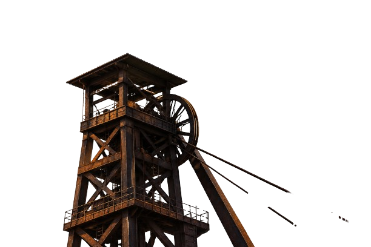
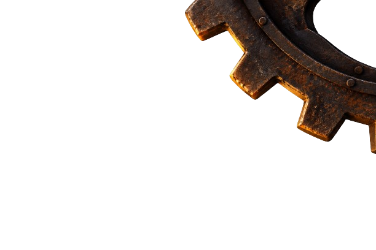
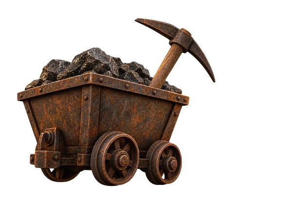

La veta de Catavi se convirtió en uno de los yacimientos de estaño más importantes de Bolivia. Miles de familias de Llallagua y la región llegaron a trabajar el cerro, abriendo galerías a pulso y turno tras turno bajo tierra.
Los primeros campamentos crecieron alrededor de la bocamina casi de la noche a la mañana: casas de adobe, pulperías y capillas se levantaron al ritmo de los turnos, y el silbato de la mina marcó durante décadas la vida diaria de todo el pueblo.
Tras la Revolución Nacional, las minas pasaron a manos del Estado y Catavi se volvió símbolo de la organización sindical minera boliviana: un lugar donde los trabajadores conquistaron derechos que marcaron la historia del país.
De esos años quedó una identidad que todavía se respira en Catavi: la de un pueblo minero que aprendió a organizarse, a defender su trabajo en asamblea y a sostener, generación tras generación, la memoria de quienes bajaron primero al socavón.
Cuando la mina estatal se achicó, fueron los propios mineros quienes se organizaron en cooperativas para seguir trabajando el cerro. Esa herencia de esfuerzo colectivo sigue viva hoy en Catavi.
Hoy la Cooperativa Multiactiva Siglo XX Catavi reúne a decenas de familias socias que continúan el trabajo del cerro con el mismo espíritu de organización de sus fundadores, sosteniendo actividades de extracción e ingenio y proyectando nuevas formas de trabajo colectivo para las próximas generación.